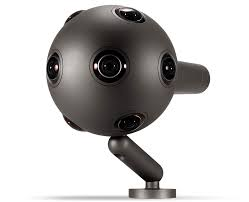
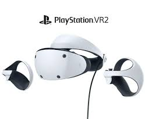
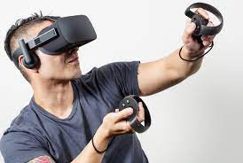
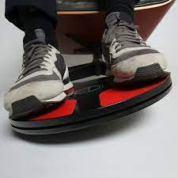
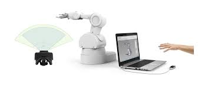
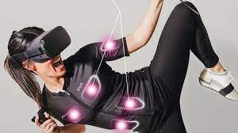
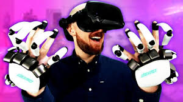

6 - Realidad Virtual vs Aumentada
6.1. Definición RV
Al hablar de Realidad Virtual (RV), a muchos nos vienen a la cabeza películas de ciencia ficción como 'Minority Report'. Sin embargo, lo cierto es que hoy en día es una tecnología totalmente mimetizada con nuestra vida diaria. Videojuegos, medicina, educación... La Realidad Virtual ha llegado para quedarse. Pero, ¿en qué consiste exactamente?
La Realidad Virtual (RV) es un entorno de escenas y objetos de apariencia real —generado mediante tecnología informática— que crea en el usuario la sensación de estar inmerso en él. Dicho entorno se contempla a través de un dispositivo conocido como gafas o casco de Realidad Virtual. Gracias a la RV podemos sumergirnos en videojuegos como si fuéramos los propios personajes, aprender a operar un corazón o mejorar la calidad de un entrenamiento deportivo para obtener el máximo rendimiento.
Pero, ¿en qué sectores se está utilizando a día de hoy la Realidad Virtual? La medicina, la cultura, la educación y la arquitectura son algunos de los ámbitos que ya han sucumbido a las ventajas que ofrece esta tecnología. Desde visitas guiadas a museos hasta la disección de un músculo, la RV nos permite cruzar unos límites que de otra forma no serían imaginables.
6.2. Accesorios para la Realidad Virtual
La mayoría de los controladores de realidad virtual para PC y otros dispositivos, y los sensores de realidad virtual, no solo permiten la simulación de nervios eléctricos y movimiento a través de hápticos, sino que también permiten al usuario controlar los entornos de realidad virtual como desee.
Accesorios VR
Estos son dispositivos y accesorios que se necesitan junto con los cascos de realidad virtual con controladores para disfrutar del contenido de realidad virtual, aunque algunos accesorios son los que se usan para hacer contenido de realidad virtual.
Tenemos cámaras de realidad virtual, controladores, trajes y chalecos de cuerpo completo y medio cuerpo, guantes, sillas, hardware de entrenamiento como cintas de correr de realidad virtual, máscaras faciales, pistolas, zapatos, estaciones base, transmisores inalámbricos, etc..
Cámaras de realidad virtual para grabar contenido en 3D y VR
La siguiente imagen es de una cámara de realidad virtual utilizada para grabar videos e imágenes de realidad virtual.

Una cámara de realidad virtual es uno de los mejores accesorios para tener si eres un creador de contenido de realidad virtual. Funciona filmando en 360 o 180 grados o en todas las direcciones para contar una historia multidireccional.
Esta cámara, que permite la toma de imágenes y videos dentro de una esfera determinada a su alrededor, le da a las imágenes y videos capturados una verdadera profundidad y perspectiva independientemente del ángulo de visión. Esto se puede lograr creando paralaje tanto horizontal como vertical.
Cámaras para seguimiento de movimiento y posición en realidad virtual:
La siguiente imagen es de un auricular PlayStation VR y su cámara de seguimiento de posición y movimiento.

La tecnología de seguimiento de la cámara es diversa: las cámaras se pueden conectar a los auriculares, fijar en una habitación para experiencias de realidad virtual en la sala o usar como marcadores ópticos el usuario de realidad virtual.
Los auriculares PlayStation VR son uno de los auriculares VR con controladores que utilizan el seguimiento posicional basado en la cámara. Las cámaras, en tal sistema, funcionan capturando imágenes y enviando señales que permiten ajustar la imagen que ve el usuario en la realidad virtual.
Las cámaras de seguimiento de realidad virtual están diseñadas para garantizar una precisión de seguimiento muy alta donde la cámara debe garantizar la coincidencia y debe mostrar la conexión del mundo real y de realidad virtual.
Controladores VR
La siguiente imagen muestra los controladores manuales de realidad virtual de Valve.

Los controladores de realidad virtual son una categoría amplia de los mejores controladores de realidad virtual que permiten a los usuarios manipular sus entornos como lo deseen. Esto se puede hacer con la mano, el pie, los dedos u otras partes del cuerpo.
a) Controladores de realidad virtual manuales
Estos controladores, como su nombre indica, se utilizan y controlan manualmente y utilizan principalmente entradas de botones (gamepads). Puede tener seguimiento de movimiento, interfaces de gestos y tecnología de seguimiento de posición para rastrear ambas manos y dedos.
Perciben los movimientos de las manos y los dedos y los transforman en impulsos eléctricos que se introducen en los entornos de realidad virtual. Esos terminan siendo los movimientos de manos o dedos en la realidad virtual.
Esos controladores de realidad virtual con hápticos transmiten impulsos eléctricos desde el sistema de realidad virtual a las manos y los dedos, lo que permite que las manos y los dedos del usuario sientan los entornos de realidad virtual como si la persona estuviera físicamente presente en esos entornos simulados.
Ejemplos en esta categoría incluyen Controladores Oculus Touch, Samsung Rink, SteelSeries Stratus XL y HTC Vive.
b) Controladores Foot VR
El siguiente ejemplo de imagen es del controlador VR 3D Rudder Foot:

Los controladores de realidad virtual basados en pies pueden traducir los movimientos de los pies y los dedos de los pies como se describió anteriormente para los controladores manuales que utilizan el seguimiento de movimiento y posición. Algunos también incorporan retroalimentación háptica.
Se puede usar para controlar el entorno de realidad virtual apoyando los pies sobre él y moviéndose alrededor de los pies. También tiene retroalimentación háptica.
c) Otros controladores no corporales
Sistema VR, incluido un Leap Motion Box, en uso:

El Leap Motion es un tipo especial de caja rectangular portátil pequeña que se coloca en la misma habitación o espacio donde el usuario está usando el visor de realidad virtual con controladores, y se conecta a la computadora mediante un cable USB. Le permite controlar la computadora a través de un movimiento de la mano.
Con él, puede llevar sus manos en entornos de realidad virtual, rastrear las manos y los dedos en tiempo real en realidad virtual, mientras procesa controles manuales más suaves. Se puede utilizar para todas las actividades de realidad virtual.
d) Cascos inalámbricos
Los cascos de realidad virtual con capacidad inalámbrica ahora tienen adaptadores inalámbricos para usar, lo que elimina la necesidad de cables de la ecuación al disfrutar de experiencias de realidad virtual a escala de sala.
Se suelen completar con Estaciones VR
e) Estaciones VR
Estas estaciones base rastrean la ubicación de los cascos de realidad virtual. Funcionan inundando la habitación con luz no visible, y los receptores de los dispositivos rastreados interceptan esta luz y determinan dónde están los dispositivos en relación con la estación base.
En los sistemas Steam VR, dos de estas estaciones se colocan en las esquinas opuestas de una habitación.
Trajes de realidad virtual

Un traje de realidad virtual también permite el seguimiento de todo el cuerpo en realidad virtual porque los sensores pueden transmitir la posición y la postura de todo el cuerpo en la realidad virtual.
Tactsuit de bHaptic, TeslaSuit y Hardlight Suit / NullSpace VR son algunos ejemplos de trajes de realidad virtual que usan sensores y tienen hápticos para ayudar a sumergir todo el cuerpo, la parte inferior del cuerpo, la parte superior del cuerpo u otras partes del cuerpo en experiencias de realidad virtual.
Este traje te permite experimentar sensaciones táctiles, esfuerzos físicos, peso, aspereza o suavidad de un objeto en la realidad virtual, sensaciones de calor y frío y otras hápticas en diferentes partes del cuerpo, desde un nivel de primera persona como si estuvieras realmente y en en la vida real, haciendo esas cosas que estás haciendo en realidad virtual. TeslaSuit también captura el movimiento para ayudar a mejorar el seguimiento con el tiempo. También contiene datos biométricos basados en sensores para rastrear los niveles emocionales del usuario. Idealmente, el traje recibirá entradas del movimiento del usuario y de los datos biométricos para ayudar a ajustar el sistema de realidad virtual según sea necesario según la posición y el movimiento del cuerpo, mientras que la salida se envía al cuerpo a través de la retroalimentación háptica y el control del clima. Sus aplicaciones incluyen entrenamiento de realidad virtual, rehabilitación, empresa, control climático y atletismo. En rehabilitación, se puede utilizar para estimulación muscular eléctrica, estimulación nerviosa, respuesta galvánica de la piel, captura de movimiento y electrocardiograma.
Guantes hápticos de realidad virtual

La primera aplicación de los guantes de realidad virtual es permitirle ver sus manos dentro de los entornos de realidad virtual para que pueda tocar y controlar objetos virtuales en juegos, etc. Con la tecnología de seguimiento de dedos de manos y múltiples ángulos, puede ver esas manos en tiempo real dentro del sistema de realidad virtual.
De esa manera, por ejemplo, puede sentir el peso de los objetos al levantar pesas, como en aplicaciones de levantamiento de pesas. Por lo tanto, estos son los mejores controladores de realidad virtual para una inmersión rápida en realidad virtual. Los guantes hápticos como los de Oculus contienen 'tendones' internos que simulan un sentido del tacto al tensar y relajar el cuerpo. Con estos guantes, puede sentir la háptica en todas las manos; sentir la forma, el tamaño y la rigidez de los objetos (el guante genera una fuerza para imitar la forma, el tamaño y la rigidez del objeto); y experimentar la fuerza del peso de los objetos.
El hardware puede comprender sensores, actuadores, una fuente de alimentación y una transmisión inalámbrica. Los guantes funcionan inflando y desinflando pequeñas ampollas de aire (en las bolsas de aire inflables en la superficie de los guantes) a lo largo de la superficie de la mano.
6.2.1. Aplicaciones Cardboard de realidad virtual
-
Viajar al espacio exterior: Hay una buena variedad de apps que te permitirán realizar paseos por el espacio, conocer planetas externos a la tierra, aprender sobre constelaciones y el sistema solar, caminar sobre la luna y más actividades relacionadas como navegar en el espacio.
-
Ver vídeos en YouTube con un ángulo completo a 360°. Una de las mejores funciones disponibles que posee YouTube es la de visualizar vídeos panorámicos con una vista completa alrededor, sin duda diferentes y más recomendados que a los que estamos habituados.
-
**Recorrer y explorar países^^: Existen aplicaciones específicas que nos llevan a conocer la Torre Eifell en Paris, otras a recorrer la sabana Africana por dar ejemplos, pero si queremos conocer con una mayor calidad gráfica estos e infinitos lugares del mundo podemos hacerlo con la app Streetview de Google.
-
Jugar a divertidos juegos: Se destacan por su interfaz gráfica y jugabilidad un sinfín de juegos disponibles en Google Play cubriendo diversos rubros para abarcar diferentes gustos.
-
¿Miedo? Probar a ver si nos asustamos: La fusión entre la realidad virtual y el terror a generado títulos interesantes, ¿Serás capaz de recorrer lugares sin temor?
6.3. Realidad aumentada
Es bastante común confundir el término de Realidad Virtual con el de Realidad Aumentada.
La principal diferencia entre ambas es que la RV construye el mundo en el que nos sumergimos a través de unas gafas específicas. Se trata de un ámbito totalmente inmersivo y todo lo que vemos forma parte de un entorno construido de manera artificial a través de imágenes, sonidos, etc. Por su parte, en el caso de la Realidad Aumentada (RA), nuestro propio mundo se convierte en el soporte para colocar objetos, imágenes o similares. Todo lo que vemos está en un entorno real y puede que no sea estrictamente necesario usar gafas. El ejemplo más claro y mainstream de este concepto es Pokémon Go.
La Realidad Aumentada (RA) asigna la interacción entre ambientes virtuales y el mundo físicos posibilitando que ambos se entremezclen a través de un dispositivo tecnológico como webcams, teléfonos móviles (IOS o Android), tabletas, entre otros.
Podemos afirmar que la Realidad Aumentada se caracteriza por:
*combinar el mundo real y el virtual; * ofrecer una interacción en tiempo real; * adaptarse al entorno en que se insiere; * interactuar con todas las capacidades físicas del entorno (en tres dimensiones).
Así, para que la Realidad Aumentada pueda reproducirse, se necesitan 3 componentes fundamentales:
- un objeto real que funcione como referencia para la interpretación y creación del objeto virtual.
- La presencia de un dispositivo con cámara —como un teléfono móvil— para transmitir la imagen del objeto real.
- Un software responsable por interpretar la señal transmitida por la cámara.
A través de la cámara, el objeto real se transmite para el software, que recibe la imagen y la combina con proyecciones 3D.
A su vez, las proyecciones son introducidas en la imagen y sobrepuestas en el entorno físico, reflejando el resultado de la RA al usuario.
6.3.1. Ejemplos de uso laboral
Aunque las aplicaciones más populares de la Realidad Aumentada están, en su mayoría, destinadas al entretenimiento —como los juegos— empresas de diferentes segmentos (como educación, medicina, moda, inmobiliario, etc.) también pueden aplicarla, por ejemplo, en el desarrollo de sus productos y en sus estrategias de Marketing.
6.3.2. Ejemplos en nuestro día a día
Filtros de aplicaciones
Un ejemplo perfecto de realidad aumentada que se ha vuelto un verdadero viral son los filtros de SnapChat e Instagram. El algoritmo de las aplicaciones calcula puntos de referencia en la imagen de la cámara, con base en miles de fotografías recopiladas previamente. De este modo, logra insertar los "dibujos digitales" de los filtros perfectamente. Luego, usa una especie de máscara 3D para interpretar los movimientos del usuario, por ese motivo, incluso cuando nos movemos o cambiamos de posición, el filtro se adapta a la escena en tiempo real.
QR Code
QR Code es una alternativa al código de barras tradicional. La etiqueta formada por cuadrados blancos y negros puede almacenar muchísima información, como el origen y las especificaciones técnicas de un producto. Cuando la cámara captura la imagen de la figura, el software "traduce" ese contenido. El resultado puede ser un texto, una imagen o un enlace a un sitio web.
Google Translate
La aplicación de traducción de Google permite detectar idiomas y traducir palabras y frases escritas en carteles y placas automáticamente, usando una foto tomada con la cámara desde el teléfono móvil.
Google Maps
Y aún sobre los productos de Google, la aplicación Google Maps también permite utilizar la Realidad Aumentada para recibir orientación de navegación sobre cómo hacer un determinado trayecto y llegar a un lugar.
La función, llamada Live View, utiliza la cámara del teléfono móvil para proyectar indicaciones paso a paso sobre el mundo real.